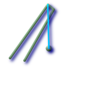
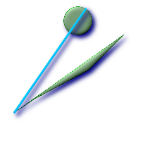

名前
ST_LongestLine — 二つのジオメトリの二次元長が最長となるポイントを返します．見つかった最長線が複数ある場合は，最初のもののみ返します．返されるラインは捨てにg1側を始点，g2側を終点とします．この関数が返すラインの長さは，常にst_maxdistanceと同じになります．
概要
geometry ST_LongestLine(geometry
g1, geometry
g2);
例
 ポイントとラインの間の最長ライン
SELECT ST_AsText(
ST_LongestLine('POINT(100 100)'::geometry,
'LINESTRING (20 80, 98 190, 110 180, 50 75 )'::geometry)
) As lline;
lline
-----------------
LINESTRING(100 100,98 190)
|  ポリゴンとポリゴンの間の最長ライン
SELECT ST_AsText(
ST_LongestLine(
ST_GeomFromText('POLYGON((175 150, 20 40,
50 60, 125 100, 175 150))'),
ST_Buffer(ST_GeomFromText('POINT(110 170)'), 20)
)
) As llinewkt;
lline
-----------------
LINESTRING(20 40,121.111404660392 186.629392246051)
|
 素敵な都市のある部分から他の部分に移動するための最長直線距離．最長距離はこのラインの長さと同じになります．
SELECT ST_AsText(ST_LongestLine(c.the_geom, c.the_geom)) As llinewkt,
ST_MaxDistance(c.the_geom,c.the_geom) As max_dist,
ST_Length(ST_LongestLine(c.the_geom, c.the_geom)) As lenll
FROM (SELECT ST_BuildArea(ST_Collect(the_geom)) As the_geom
FROM (SELECT ST_Translate(ST_SnapToGrid(ST_Buffer(ST_Point(50 ,generate_series(50,190, 50)
),40, 'quad_segs=2'),1), x, 0) As the_geom
FROM generate_series(1,100,50) As x) AS foo
) As c;
llinewkt | max_dist | lenll
---------------------------+------------------+------------------
LINESTRING(23 22,129 178) | 188.605408193933 | 188.605408193933
|